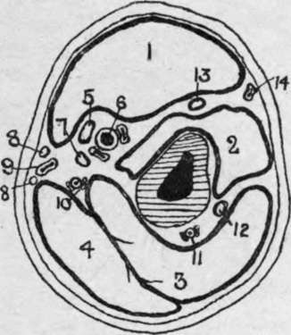

Fractures Of The Lower End Of The Humerus
Description
This section is from the book "Surgical Anatomy", by John A. C. MacEwen. Also available from Amazon: Surgical Anatomy.
Fractures Of The Lower End Of The Humerus
(a) Transverse supracondyloid ; (b) T-shaped fracture ; (c) fractures of condyles ; (d) separation of lower epiphysis. All of these fractures occur more frequently in young subjects.
(a) The transverse supracondyloid explains itself. It is generally oblique from above and behind, downwards and forwards, and results generally from a blow on the elbow ; the lower fragment, with the bones of the forearm, is displaced backwards and upwards, the triceps, biceps, and brachialis anticus assisting.
(b) In the T-shaped fracture there is, in addition to the transverse fracture described in (a), a vertical limb, which runs down between the condyles into the joint. It also is generally produced by falling on the elbow, which is flexed.
(c) In fractures of the condyles the line of fracture generally lies above the epicondyle and outside the joint, and then enters the articulation about the trochlear surface. In fracture of the internal condyle displacement upwards, backwards, and inwards may occur, the ulna going with the condyle Displacement in fracture of the external condyle is generally slight. The epicondyles may be chipped oft", the internal suffering more frequently, as it exists as a distinct epiphysis until about the eighth year. Displacement is generally slight, but the ulnar nerve may be damaged by fracture of the internal epicondyle.
(d) The lower end of the humerus presents (a) an epiphysis for capitellum and outer half of trochlea. (b) One for remainder of the trochlea, (c) One for the external condyle. These unite to form the lower epiphysis, which forms an irregular line running between the two condyles, and unites to the shaft about the seventeenth year. The internal epicondyle has a separate epiphysis, and does not join the shaft until about the eighteenth year. The epiphysis is almost entirely within the capsule, and there is consequently in separation generally only slight backward displacement. As the humerus grows chiefly from the upper epiphysis, this accident is not commonly followed by much shortening, and, indeed, marked shortening does not even follow excision of the elbow with complete removal of this epiphysis, unless performed at an early age.
It is a general rule that the epiphysis toward which the nutrient artery is directed unites first, and also that in the foetal position, with both upper and lower extremities flexed, all the nutrient vessels point downwards. Hence, in the humerus the nutrient vessel is directed downwards, and the lower epiphysis unites first. The nutrient vessel divides into ascending and descending branches on reaching the medulla, which rapidly break up into a fine capillary anastomosis. The bone also receives blood-supply from numerous vessels entering the foramina at the extremities of the bone and from the periosteum, and all of these systems anastomose.
Acute osteomyelitis is discussed in connection with affections of the lower limb. It occasionally affects the humerus. Chronic microbic infection of long bones may be either due to tubercle or syphilis. The former generally attacks the epiphyses, causing ulceration or caries of bone, rarely invades the diaphysis, and regularly affects the joint, giving rise to tubercular synovitis, ulceration, and shedding of cartilage, sinus formation, anchylosis, etc. Syphilis affects bone in many ways, a chronic osteitis and periostitis, with formation of nodes on the surface of the shaft, being one of the most common (occurs generally in tibia). The humerus may also be affected by sarcoma, either myeloid, spindle- or round-celled* The former type generally occurs within the ends of long bones (head of humerus), while the latter, which is much more malignant, generally begins on the surface of the shaft, probably in the periosteum. While the myeloid sarcoma may be sometimes successfully removed by a local operation, the periosteal type demands disarticulation at the shoulder.
Amputation through the arm is generally performed by a modified circular method, two short antero-posterior flaps of skin and cellular tissue (2½ inches long) being raised and retracted, the muscles then cut circularly, and also retracted, and then the bone cut as high up as possible. As the biceps retracts markedly, it is generally best to cut it first about the level of the skin incision, and then cut the other muscles higher up If the amputation be about the middle of the arm, the nutrient artery may give a little trouble. In arranging the flaps the arm should be well rotated outwards, and then in the anterior segment are the biceps and brachialis anticus, with the musculocutaneous nerve between them, and a small portion of the triceps ; the brachial vessels, median and ulnar nerves, and inferior profunda artery. The basilic vein and internal cutaneous nerve are found about the inner border, and the cephalic vein about the outer border of the skin flap. In the posterior segment are the triceps, superior profunda artery, and musculo-spiral nerve.
Fig. 49.-Outline Diagram of Transverse Section of Upper Arm in the Middle Third.
(Modified from Heath.)
1. | Biceps. | 6. | Brachial vessels. | 11. | Superior profunda vessels. |
2. | Brachialis anticus. | 7. | Ulnar nerve. | 12. | Musculo-spiral nerve. |
3. | Triceps. | 8. | Internal cutaneous nerves. | 13. | Musculo cutaneous nerve. |
4. | Triceps. | 9. | Basilic vein. | 14. | Cephalic vein. |
5. | Median nerve. | 10. | Inferior profunda vessels |
Continue to: